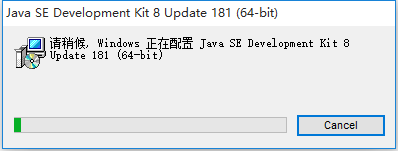
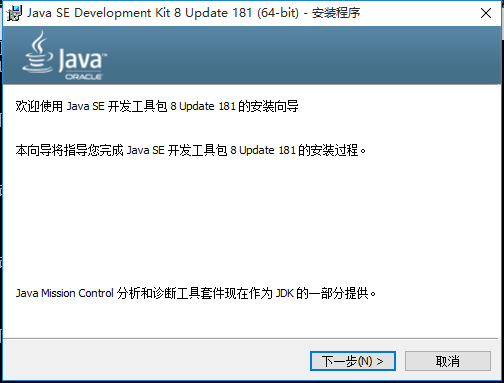
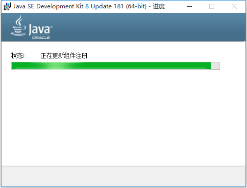
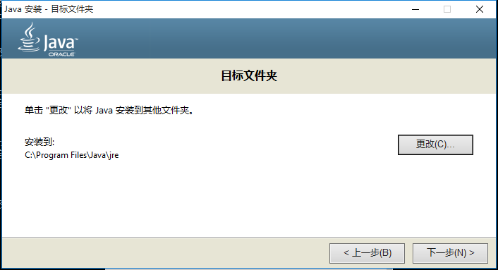
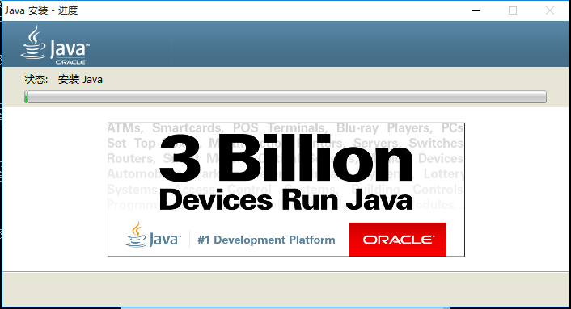

1 下载jdk
2 安装jdk
双击下载下来的exe文件执行安装。安装过程截图如下：






安装后，使用快捷键 win+R 输入cmd 运行终端程序，在终端中 输入 java -version 校验安装结果。
如图所示，安装成功。
3 配置环境变量
- 打开系统属性
- 点击高级系统设置
- 点击环境变量
- 在系统变量中新建变量
新建JAVA_HOME变量，变量值是jdk安装目录。
- 在系统变量中选择Path变量
- 编辑Path变量，在变量值的末尾添加下面的内容。
C:\Program Files\Java\jdk1.8.0_181\bin;C:\Program Files\Java\jdk1.8.0_181\jre\bin
或者使用
%JAVA_HOME%\bin;%JAVA_HOME%\jre\bin
- 保存退出后，再在终端中依次输入
javac、javah校验环境变量是否修改成功。


jdk 11
jdk 11 默认没有 jre 目录，需要手动生成。在 jdk 目录下执行下面的命令。
bin\jlink.exe –module-path jmods –add-modules java.desktop –output jre
jdk 8 之后，不再支持 javah 命令生成头文件，使用 javac -h 替换。
觉得有用？那打赏一个呗。[去打赏](/donate/)